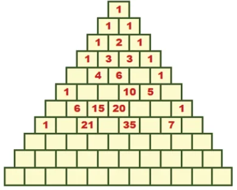
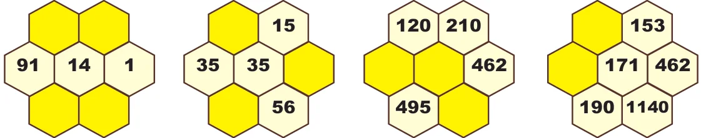
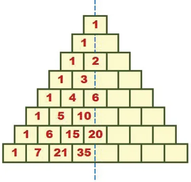

- 1.Complete the Pascal’s Triangle.

- 2.The following hexagonal shapes are taken from Pascal’s Triangle. Fill in the missing
numbers.

- 3.Complete the Pascal’s Triangle by taking the numbers 1,2,6,20 as line of symmetry.

Objective type questions
- 4.The elements along the sixth row of the Pascal’s Triangle is
- (i)1,5,10,5,1 (ii) 1,5,5,1 (iii) 1,5,5,10,5,5,1 (iv) 1,5,10,10,5,1
- 5.The difference between the consecutive terms of the fifth slanting row containing four
elements of a Pascal’s Triangle is
- (i)3,6,10,… (ii) 4,10,20,… (iii) 1,4,10,… (iv) 1,3,6,…
- 6.What is the sum of the elements of nineth row in the Pascal’s Triangle?
- (i)128 (ii) 254 (iii) 256 (iv) 126